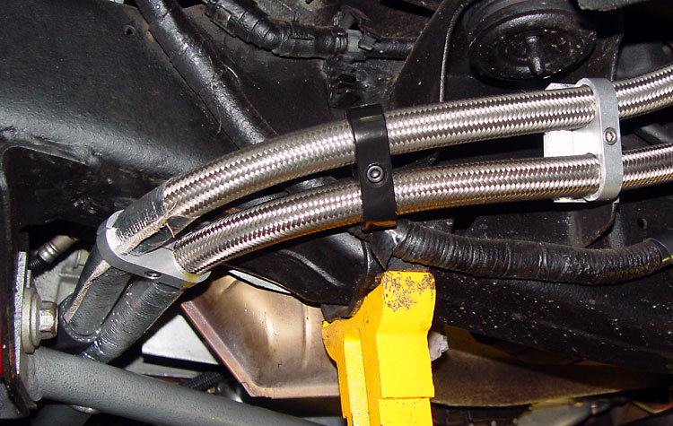

|
Dual Oil Filter Install |
|
This photo is taken from the driver's side wheel well, looking towards the rear of the truck. You can see the Accusump in the background. The filters are Mobil 1 filters (M1-301 in the back, and M1-204 in the front). The front filter has a Magnefine Forcefield magnetic filter. |
|
I used a Canton billet oil filter adapter (#22-598 - 22mm threads). This piece is a work of art, both cosmetically and mechanically. The only caution is that the tightening nut is huge. It is a perfect fit for a 1 7/16" Ford fan clutch wrench (which is the only use I had for that tool, as it sure as hell wouldn't break the fan free). Note that the hose barb fittings were for my initial install, which was done with rubber hose. |
|
The hoses snake back between the rear lower control arm mounting point and the frame. I put tension on the hoses to cause them to bow outwards so that they are not rubbing against the cab mount shown to the right. Although it is hard to tell from the photo, the hoses do not touch anything. |
|
Some reworking of the Trans Dapt mount was required. First, it needs to be spaced out from the frame to clear the wiring harness and fuel vapor line. So I made an aluminum mount. The items on the right are an oil temperature sender and an Accusump pressure switch (the Accusump install is detailed here). I also installed a check valve (the brass thing on the left) for the Accusump return. |
| The top also has to be trimmed to clear the lines. It's a super-tight fit up there, but I wanted the use long filters, and I wanted them to be above the bottom of the frame rail. |
|
 I covered the hoses in Thermo-Tec Thermo Sleeve to protect the hose from heat from the catalytic converters. |